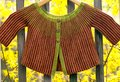

|
||
Premium Patterns Wintry Mix Mitts Love Bytes HawkeyeFree Patterns Kiddie Cadet Summerlin Ruffled Scarf Seamless DS Sock Simply Seamless Pouch Myriads of MushroomsExtras DIY Mitten Blocker Felt Patch Tutorial Yarn Dyeing Tutorial Needle Pouches Knitting Journal |
April 12, 2010 - Posted by Grace SchneblyRed, Green, and SpringHere I am still posting Malabrigo March knits and the winners have already been announced for the contests! Congratulations to everyone who won, and I am really excited to say that my banner was picked and is already being displayed in the Junkies group! Alice also won first place for her felted balls trivet in the Most Interesting category as well as second place in the Best Use of Color category with her Robot Mittens. Stop by the Mal Junkies group on Ravelry and check out all of the winners and entries from MM2010. It is definitely worth it! Project Specs Finally finished, blocked, and buttons added! Sometimes it takes a lot of time to get the simplest things done but I think this jacket was worth the wait. I was originally hoping that I could send it to my niece this fall but she is so tiny and this jacket turned out slightly larger than I was expecting. Anyways I think it will fit her perfectly next spring around her first birthday when it will still be cool enough outside to wear a light weight sweater. In the end I guess everything turned out for the best, even though it will be hard to wait that long to see her try it on! I hadn't knit a Drops design before working on this jacket. They have a ton of cute, free patterns to browse through. The design is really simple but the pattern format appears like a large block of text. It might be helpful to copy the pattern into a word document and separate the different sections of the jacket before starting. I changed a few things along the way as I knit. I slipped the first stitch of each row on the button band and continued the slipped stitch border around the neckline. I didn't add the additional rows around the neck and am hoping that it won't be too wide for a shoulder to slip through. I may have to go back and add these few rows if it turns out too big. Also I made sure to hold the strand of Lettuce behind the Boticelli Red throughout to keep the bottom edge clean and uniform. I knit the arms so that I would have as little finishing as possible in the end. I first placed stitches on waste yarn then cast on using other end of skein (I used Lettuce as my CO color) so that I didn’t have to cut yarn I was already using at bottom of jacket. Next I attached the second color (also using the other end of the skein) and work sleeve as instructed. Once the sleeve was the right length, I cast off the instructed number of stitches on second row of last stripe in Lettuce. Lastly I broke both strands of yarn used for sleeve, leaving a long tail in Lettuce for seaming, and then continue knitting with original strands used for body of jacket. Though the construction of this jacket is quite unique, it's actually very simple. You start at the first button band and work across instead of from top down or bottom up. All of the rows are knit so there's no purling to slow you down. The garter stitch fabric it creates is really soft and squishy but it does take quite a while to complete. It might not be the most exciting thing to knit but I thought it was a good project to work on while watching TV and movies. If you're not too keen on knitting all of these tiny rows, DROPs just came out with a DK weight version of this jacket that would go a lot faster and would look cute on older kids. |
   Recent ReviewsRecent Posts
 Our Favorites
|
| © 2007 KathrynIvy.com | ||
{kind=link}
{kind=link}